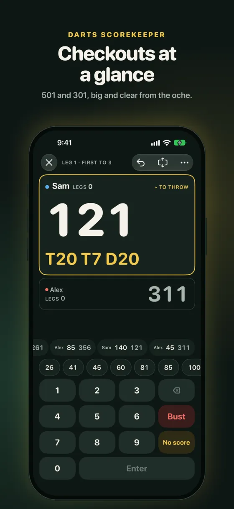
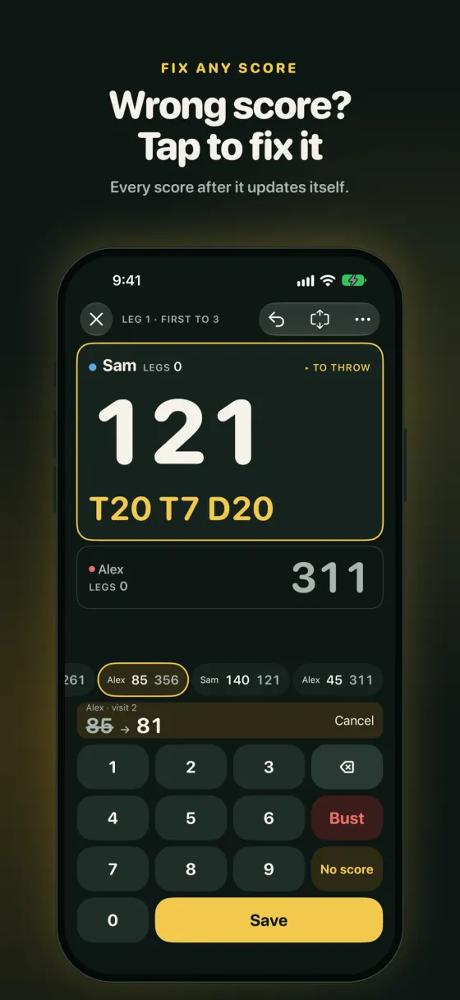
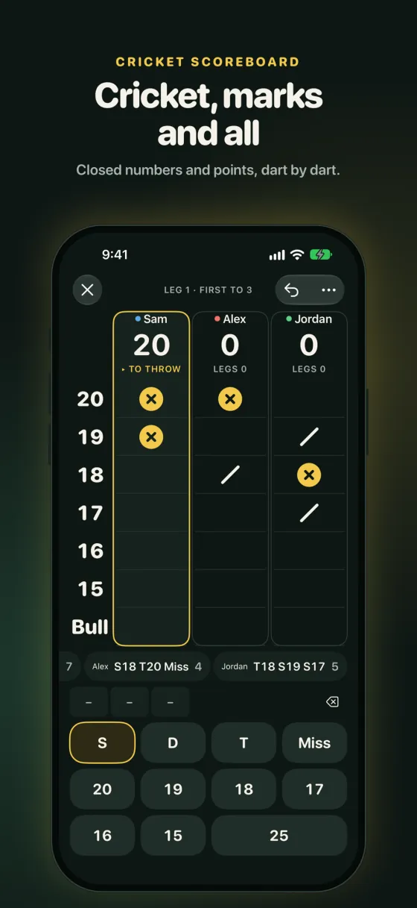
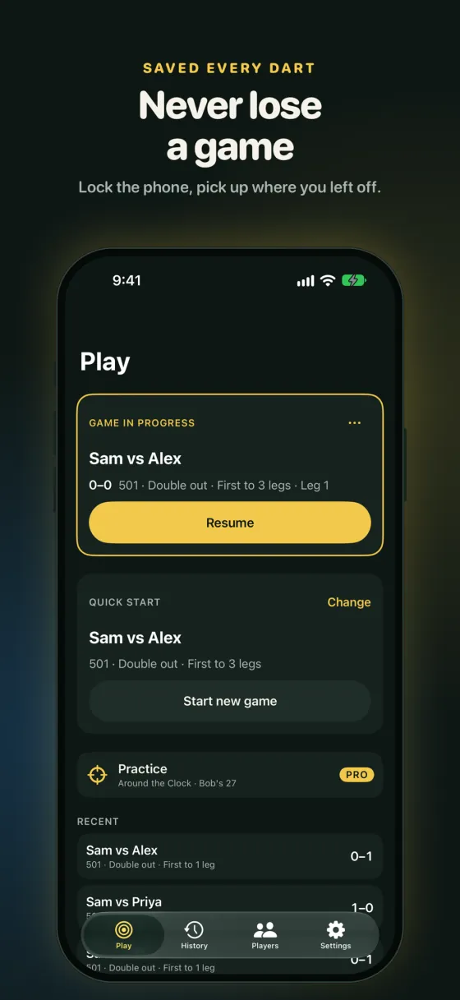
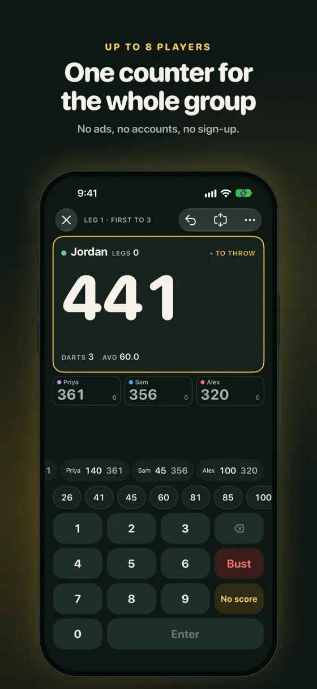
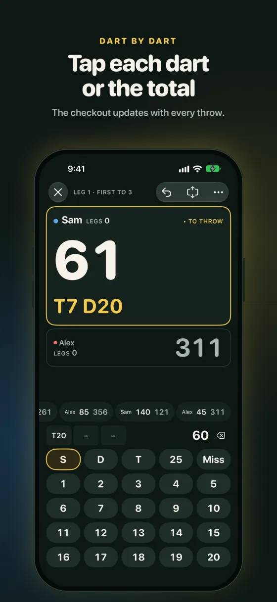
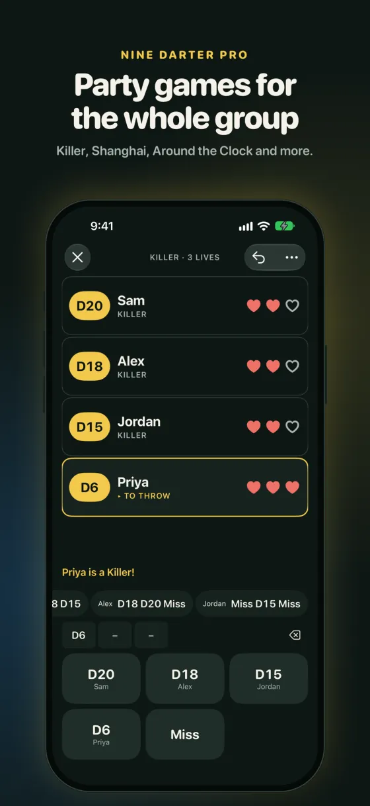
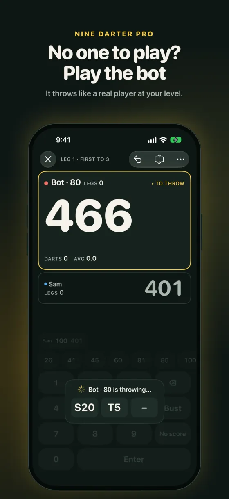
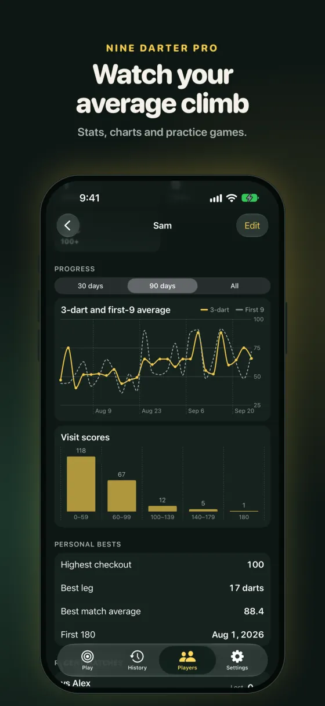

Sports · Darts scorekeeper · iPhone
Darts scoring you can’t break.
Fix any visit in one tap and every score after it follows. Keeps score for 501, 301 and Cricket, at home or down the pub.
- Free to download
- iPhone
- No ads, no tracking
- No account



Built for the oche
Score fast. Fix anything.
Fix any visit in one tap
Entered the wrong score three visits ago? Tap it, correct it, and the leg recalculates, remaining scores, averages and checkouts included.
Never lose a game
Saved after every visit, and every dart when you score dart by dart. Close the app, lock the phone or run out of battery: tap Resume and carry on. The screen stays awake while you are scoring.
Fast, clear scoring
A big keypad with quick scores, or a dart-by-dart pad with singles, doubles, trebles and the bull. Checkout routes for every finish up to 170, huge numbers readable from the oche, a landscape layout and a Big board mode.
Cricket, with the marks
20 down to 15 and the bull, with clear marks and points for every player. Closed numbers dim when nobody can score on them.
One counter for the group
1 to 8 players, guests or saved profiles, legs and sets. Straight, double or master out, straight or double in, and custom start scores.
Stats and history
3-dart average, first-9 average, checkout percentage, highest checkout, best leg, 180s, 140+ and 100+. Every match and every visit is in History, so arguments get settled.
Screens
A look inside






Free and Pro
Score every game for free.
Nine Darter is free to download, with no ads and no tracking. Pro adds party games, a caller and a bot.
Free
Scoring every game works without Pro.
- x01 and Cricket, any number of players
- Stats and history
- Resume after any interruption
Nine Darter Pro
A monthly or annual subscription.
- Party games for 2 to 8 players: Killer, Shanghai, an Around the Clock race and cut-throat Cricket
- A caller who reads out every score, bust, game shot and finish
- A bot opponent that throws like a real player at your chosen average, from 30 to 100
- Around the Clock and Bob’s 27 practice, with personal bests
- Progress charts for your averages, checkout percentage and marks per round
Pro is an auto-renewing subscription, monthly or annual. Manage or cancel it in your Apple Account settings.
Questions
Good questions.
Do I need an account?
No account, no sign-up. Games sync to your other devices through your private iCloud.
What if my battery dies mid-game?
Games are saved after every visit, so tap Resume and carry on.
Which games does it score?
501, 301 and Cricket, with custom start scores, legs and sets, and straight, double or master out.
Do I need Pro to score a game?
No. Scoring every game, x01 and Cricket, with any number of players, stats and history, works without Pro.
Are there ads or tracking?
No ads. No tracking.
Support
Questions, bugs, ideas?
Email saripo.raitis@gmail.com. If something is not working, say which iPhone and iOS version you have.